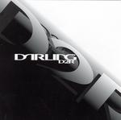

| Artist: | Darling |
| Title: | D2R |
| Label: | self produced HD02 |
| Length(s): | 49 minutes |
| Year(s) of release: | 2003 |
| Month of review: | [11/2003] |
| 1) | Clown On Fire | 4.48 |
| 2) | Black Rhyme | 4.50 |
| 3) | Prom Vomit | 2.36 |
| 4) | Where Seraphs Despair | 3.32 |
| 5) | Rope Of Sand | 1.50 |
| 6) | Aggressive Biological Behavior | 6.27 |
| 7) | An Unsettled Score | 2.51 |
| 8) | Run | 6.30 |
| 9) | Dog Dreams | 2.46 |
| 10) | A Breach Of Species One Through Five | 0.40 |
| 11) | Mr. Smith Shows The Children How To Smoke A Cigarette | 4.41 |
| 12) | Asunder | 6.56 |
Gloomy Black Rhyme is up next. The dark overtones, the eerie church organ all do their best to contribute their shared of doom. Notwithstanding the off-beatness of the music, the technically challenging compositions do not forget to convey the necessary impressions on the wary and unwary listener. The link to Present is easily made, although Present is more of a rock outfit, while Hal is more likely to play around with music.
And with a title like Prom Vomit, one may expect more 'unpleasantness'. There are some epic elements well hidden between the Zappa reminiscent marimba. Where Seraphs Despair is somber in the vein of some of those 20th century Easteuropean composers. I have heard them darker (Gorecki comes to mind), but Hal is getting there.
Rope Of Sand has plenty of piano and percussion, also piano played percussively. The overall sound is more like progressive rock than on other tracks, maybe because of the presence of organ. Aggressive Biological Behavior is one of the longer tracks, and the subject matter is not a happy one. The first part has a stubborn angriness to it, an unwillingness to accept. The following passage is in the vein of a string orchestra, light and moody in comparison. Then the intricate meandering rock returns, with plenty of heavy percussion. The keys can be quite ELPish towards the end.
Although the music so far at times could be quite unsettling, only now do we arrive at An Unsettled Score. A piping tune with notes cropping up out of nowhere to disappear soon after, without leaving any traces. Then we come a more orchestral part (synthetic of course), but the structure is indeed quite classical. Nice, but not something I am particularly fond of.
Run opens repetitively with keyboards in the back, and nothing much up front. A dark mood is evident here, sometimes subdued, sometimes less so.
Dog Dreams is a complex sounding piece, with many things going on at the same time, but not necessarily together. Piano, keys and percussion are involved, and that is about it. There is a certain jazziness about it all. A Breach Of Species One Through Five is only a short tune and quite a frantic one at that.
Mr. Smith Shows The Children How To Smoke A Cigarette is a percussion and drums rich track, with again some Emersonian keyboard playing. There is even something akin a trumpet (would have been nice to have a real one there). Chamber orchestra music. Asunder is the conclusion of D2R. Plodding keyboards and organ, dissonant and discordant, we have by now come quite familiar with the work of Hal Darling. This song has those ELPish traits again, but also elements of modern soundtrack music. But of course, all departing from the beaten path. The conclusion is especially reminiscent of the darker among the Hollywood soundtracks (Elfman et al.).